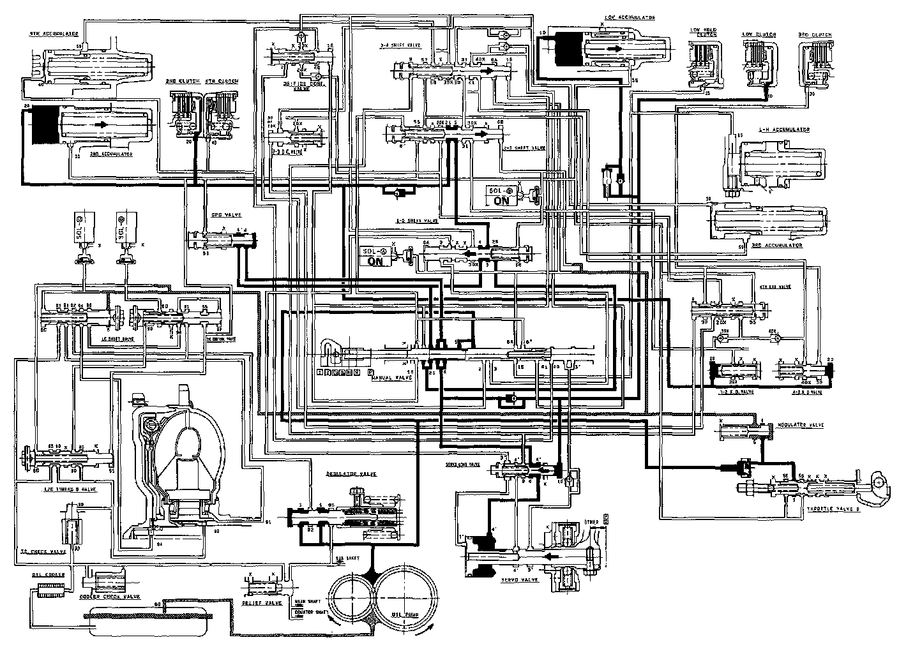

[2] Position

[2] Position
The line pressure (11 becomes line pressure 14) as it passes through the manual valve. It then goes through line (20) to the 2nd clutch via the 1-2 and 2-3 shift valves. Also, line pressure (1) goes to the modulator valve through the filter and becomes the modulator pressure 16). Modulator pressure (61 is not supplied to the 1-2, 2-3 and 3-4 shift valves because the shift control solenoid valves A and B are turned on by the TCM.
NOTE:
- When used, "left" or "right" indicates direction on the flowchart.
- SOL - (A): Shift Control Solenoid Valve A
- SOL - (B): Shift Control Solenoid Valve B
- SOL - (C): Lock-up Control Solenoid Valve A
- SOL - (D): Lock-up Control Solenoid Valve B